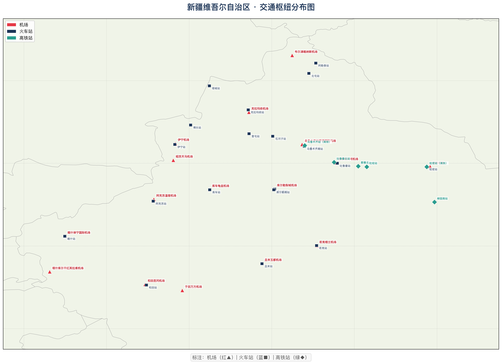
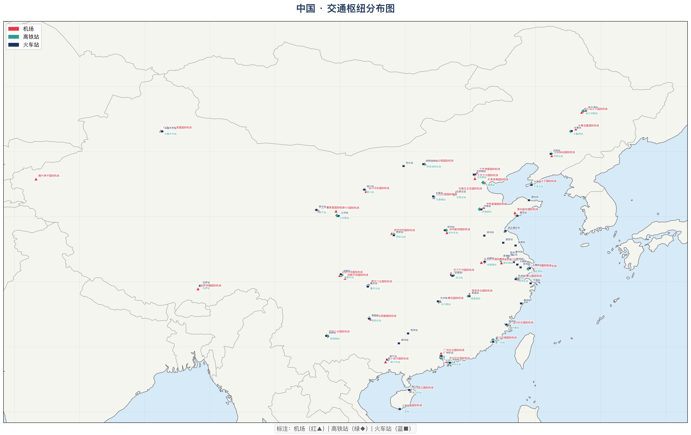
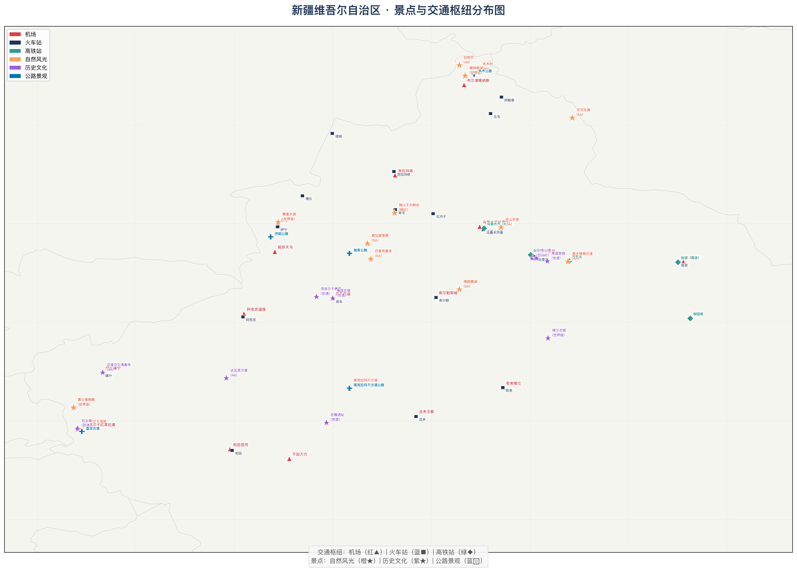
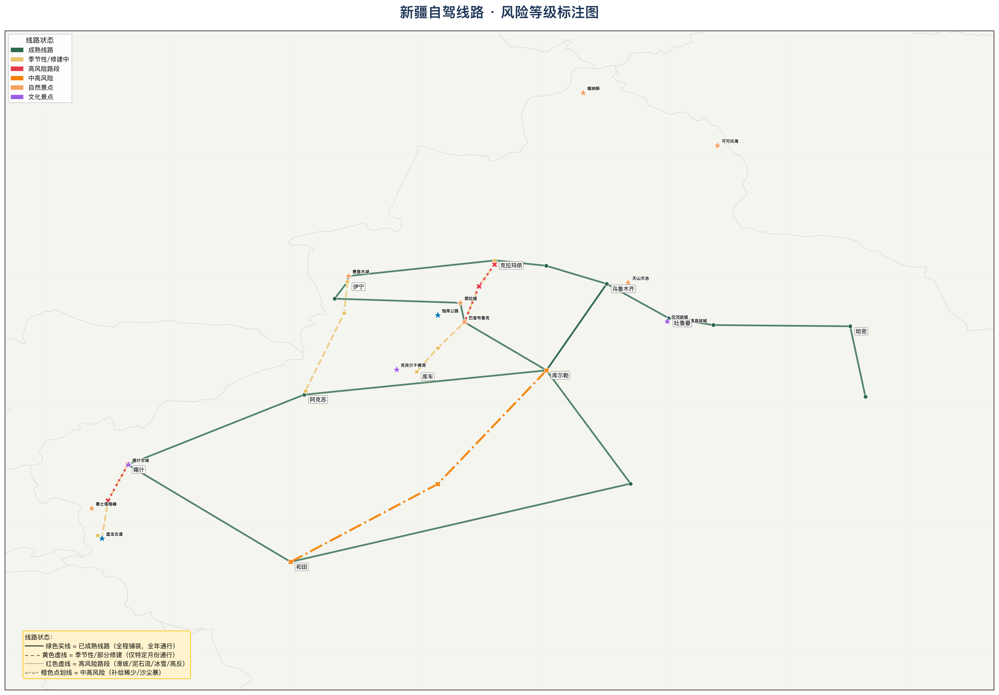

机场、火车站一目了然，景点分布清晰，自驾线路风险标注——说走就走，安全第一。



"神的后花园"，秋季金黄白桦林与碧蓝湖水交相辉映。湖怪传说更添神秘。
"大西洋最后一滴眼泪"，夏季花海遍野，远处雪山倒映湖中。
世界四大草原之一，绿毯般的草原上野花盛开，哈萨克毡房点缀其间。
中国最大沙漠，沙漠公路穿越"死亡之海"，体验壮阔与孤寂。
"冰山之父"与网红公路，海拔4000m+的高原壮美。
《西游记》火焰山原型，世遗交河故城千年不朽。

乌鲁木齐→赛里木湖→伊宁→那拉提→巴音布鲁克→库尔勒→乌鲁木齐
约2800km · 7-10天 · 全程铺装路面，全年通行
最适合首次自驾新疆的线路，补给充足，住宿方便
乌鲁木齐→吐鲁番→鄯善→哈密→敦煌
约800km · 3-4天 · 连霍高速G30，路况优良
沿途可游览火焰山、交河故城、库木塔格沙漠
乌鲁木齐→库尔勒→阿克苏→喀什→和田→若羌→库尔勒
约3500km · 10-12天 · G3012+沙漠公路
体验南疆人文风情，喀什古城、帕米尔高原必去
独山子→乔尔玛→巴音布鲁克→库车
约560km · 2-3天 · 仅6-10月通行
"中国最美公路"，一天穿越四季。冬季封路，雨季偶发落石
伊宁→昭苏→阿克苏
约350km · 1-2天 · 仅6-10月通行
白石峰达坂冬季封路，弯道多需谨慎驾驶
喀什→塔什库尔干→盘龙古道→塔县
约300km · 1-2天 · 海拔4000m+
网红公路，600多个弯道。注意高反，弯道密集需低速
独山子→乔尔玛
约120km · 7-8月暴雨期风险最高
⚠️ 滑坡、泥石流、落石多发段，雨天尽量绕行
乔尔玛→巴音布鲁克
约150km · 海拔3000m+，大雾、暗冰
⚠️ 冰达坂路段，即使夏季也可能遇到冰雪
喀什→塔什库尔干
约300km · 海拔3500-4700m
⚠️ 高反、暴风雪、路面结冰，需携带防滑链
库尔勒→塔中→和田
约520km无加油站区间
⚠️ 沙尘暴、极端高温（夏季地表70°C+）、补给极少
纳西族古城与终年积雪的玉龙雪山隔城相望。
"九寨归来不看水"，翠海、叠瀑、彩林、雪峰、藏情五绝。
世界屋脊上的圣殿与天湖，离天空最近的信仰。
"桂林山水甲天下"，竹筏漂流，喀斯特峰林如水墨画。